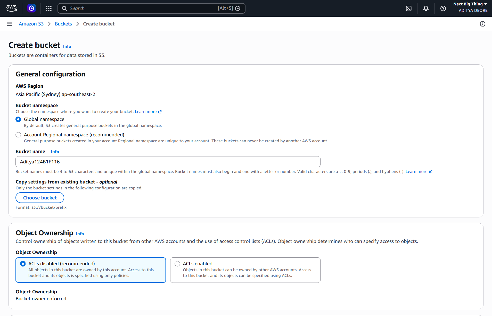
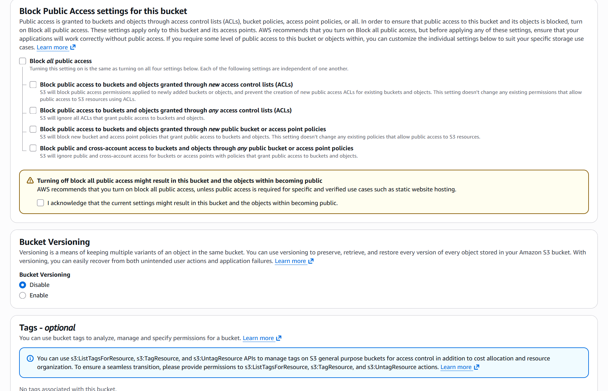
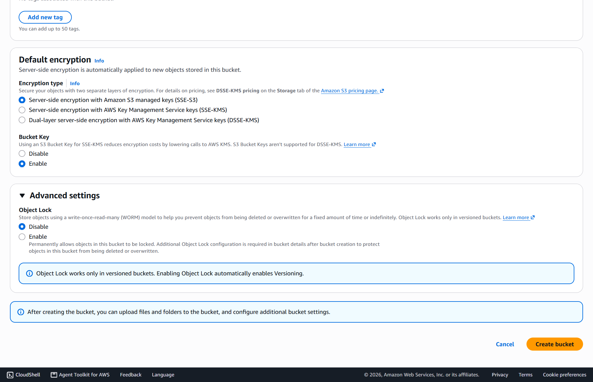
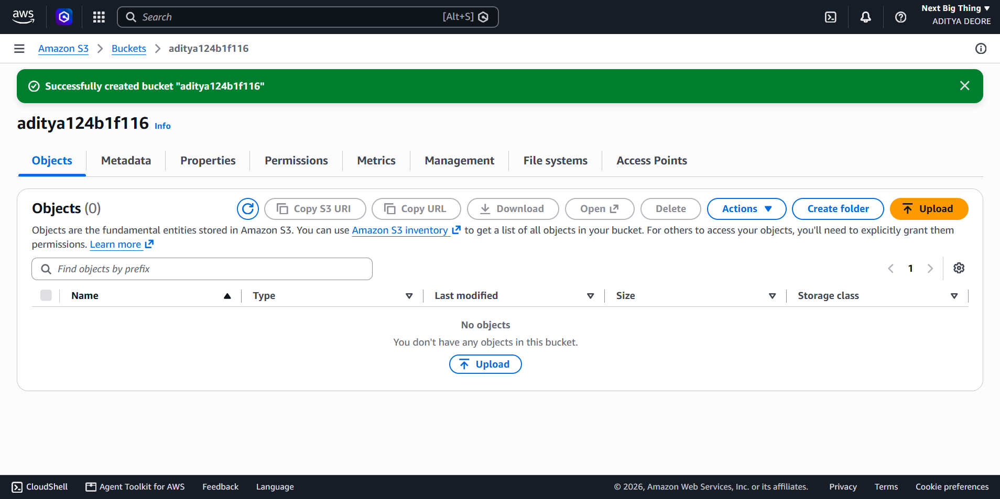
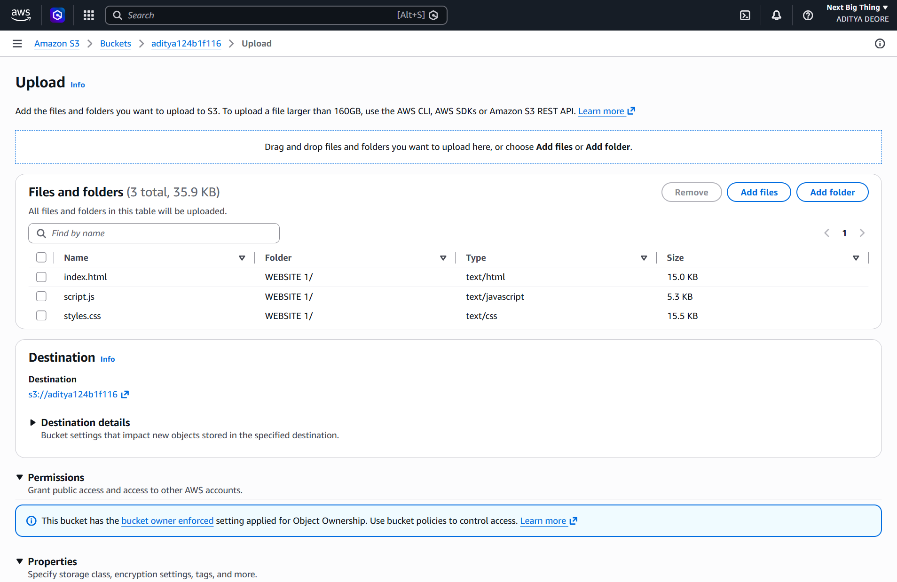
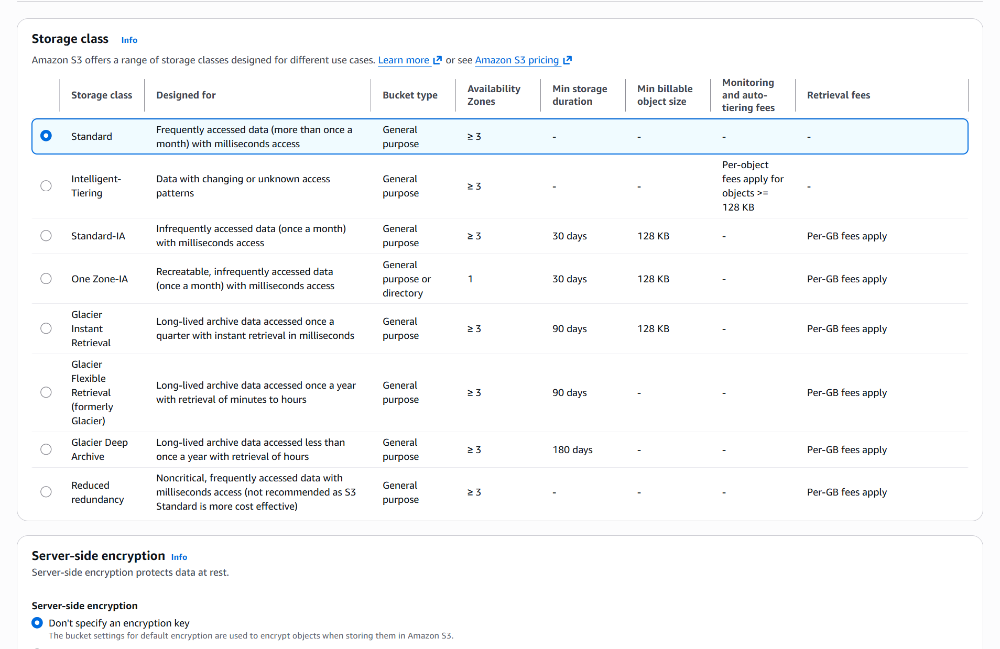
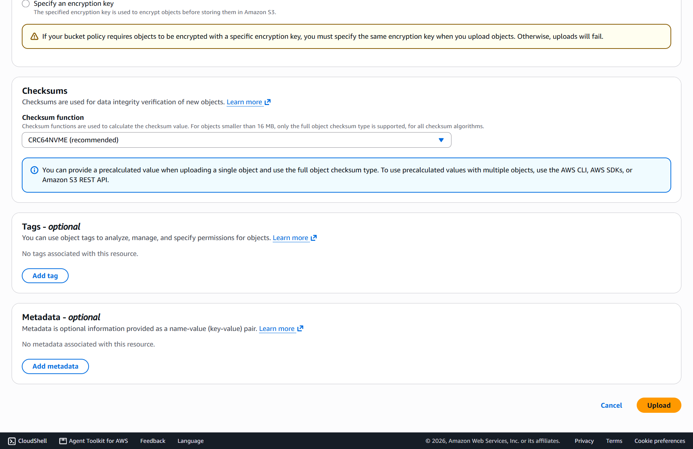
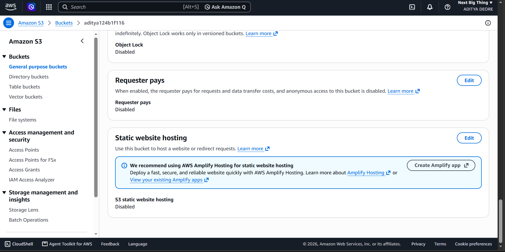
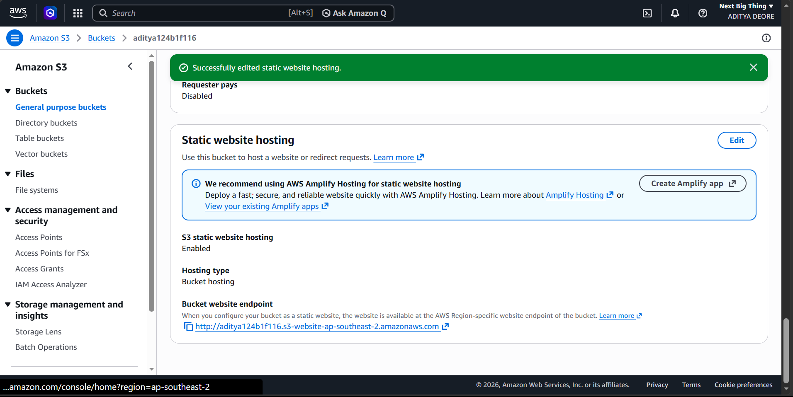
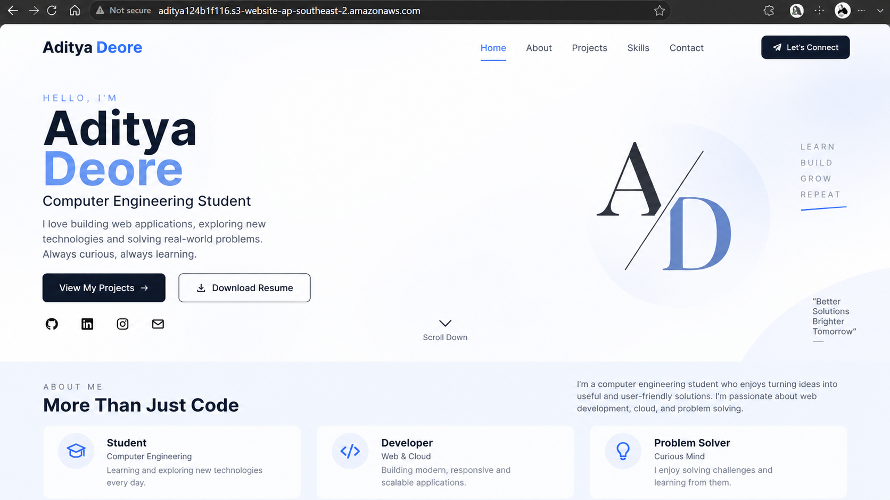

|
|
Pimpri Chinchwad Education Trust's Pimpri Chinchwad College of Engineering |
| Assignment No. 4 | |
| Course:- Cloud Computing | |
| Name:- Aditya Chandrajit Deore | |
| PRN:- 124B1F116 | |
AIM
To understand cloud storage and Storage as a Service (STaaS), and get practical knowledge of Amazon S3 by creating a bucket, uploading files and managing access permissions.
OBJECTIVES
- To understand basic concept of storage and its types.
- To understand Storage as a Service and its benefits.
- To understand Amazon S3 and S3 buckets.
- To create an S3 bucket using AWS Console.
- To upload and manage objects in the bucket.
- To understand Block Public Access settings.
- To create and apply an S3 bucket policy.
THEORY
Q1. What is Storage?
Storage means saving digital data so it can be used later. It is one of the important parts of a computer system along with CPU and RAM.
Types of Storage:
- Primary Storage: It is fast and directly used by CPU, but it is temporary. Example: RAM and Cache.
- Secondary Storage: It stores data permanently even when power is removed. Example: HDD, SSD and USB drives.
- Tertiary / Archival Storage: Used mainly for long term backup and archive. Example: Tape storage and Amazon S3 Glacier.
Important Storage Characteristics
| Characteristic | Meaning |
|---|---|
| Capacity | Amount of data which can be stored |
| Speed | How fast data can be read or written |
| Latency | Delay while accessing data |
| Durability | Ability to keep data safe without loss |
| Availability | How often storage is accessible |
| Scalability | Ability to increase storage when required |
| Cost | Price of storing the data |
| Security | Protection from unauthorized access |
| Redundancy | Keeping copies of data to reduce data loss |
Storage in Cloud Computing
Cloud storage means storing data on remote servers managed by a cloud provider instead of maintaining physical storage ourselves.
Types of Cloud Storage
| Type | Example | Primary Use |
|---|---|---|
| Object Storage | Amazon S3 | Images, videos, static website files, and backups |
| Block Storage | Amazon EBS | Persistent storage for virtual machines (EC2) |
| File Storage | Amazon EFS | Shared, scalable networked file system |
| Archive Storage | S3 Glacier | Long term, low-cost compliance backup |
| Database Storage | RDS, DynamoDB | Structured and semi-structured operational data |
Advantages of Cloud Storage:
- Lower upfront hardware cost (pay-as-you-go).
- Storage can scale easily and instantly on demand.
- Data can be accessed globally through the internet.
- Provider manages hardware redundancy and maintenance.
- Robust built-in automated backup and disaster recovery options.
Q2. What is Storage as a Service (STaaS)?
Storage as a Service means storage is provided by a cloud company through the internet and we use it according to our requirement. Instead of buying physical storage, we use storage from a provider and pay according to usage.
Main Features of STaaS:
- Storage can be provisioned instantly when needed.
- Pay only for the exact storage capacity and transfer used.
- Hardware maintenance and patching are fully handled by provider.
- Seamless elastic scalability with global accessibility.
- Enterprise security, encryption, and granular access controls are available.
STaaS Models:
- Public STaaS: Storage provided by public cloud providers like Amazon S3.
- Private STaaS: Storage dedicated within an organization's private data center.
- Hybrid STaaS: Combination of on-premise private and scalable public cloud storage.
Q3. What is an S3 Bucket?
- Amazon S3 (Simple Storage Service): An AWS object storage service designed for storing and retrieving any amount of data from anywhere.
- S3 Bucket: A container where objects (files and metadata) are stored. Every object uploaded to S3 belongs to a specific bucket.
- Flat Structure: S3 uses a flat namespace rather than a hierarchical folder tree. Folders in S3 are prefixes used for logical organization.
(aditya124b1f116.s3-website...)"] Endpoint --> Bucket["AWS S3 Bucket
(aditya124b1f116)"] Bucket --> Index["Index Document: index.html"] Bucket --> Assets["Assets: styles.css, script.js"] Index -->|200 OK & Render| Client Assets -->|200 OK & Render| Client
Figure A: Architecture and request flow for static website hosting on Amazon S3.
Common S3 Storage Classes
| Storage Class | Main Use Case |
|---|---|
| S3 Standard | Frequently accessed data with high throughput and low latency |
| S3 Intelligent-Tiering | Data with unknown or changing access patterns (automatic cost savings) |
| S3 Standard-IA | Infrequently accessed data requiring rapid access when needed |
| S3 One Zone-IA | Lower-cost infrequent data stored redundantly within a single AZ |
| S3 Glacier Instant Retrieval | Archival data requiring retrieval in milliseconds |
| S3 Glacier Flexible Retrieval | Long term archive with configurable retrieval times (1 min to 5 hours) |
| S3 Glacier Deep Archive | Lowest cost cloud storage for long-term retention (retrieval in 12 hours) |
S3 Bucket Naming Rules:
- Bucket name must be globally unique across all AWS accounts.
- Must use lowercase letters, numbers, and hyphens (3 to 63 characters long).
- Must not be formatted as an IP address (e.g., 192.168.5.4).
- Must begin and end with a letter or number.
PROCEDURE
Q4. Create S3 Bucket, Upload Files and Manage Access
Step 1: Create an S3 Bucket
- Open AWS Management Console, search for S3 and open the service.
- Click the orange Create bucket button.
- Enter a unique bucket name (e.g.,
aditya124b1f116). - Select your target AWS Region (e.g.,
ap-southeast-2Sydney). - Keep Object Ownership set to ACLs disabled (recommended).

Figure 1: Configuring general bucket settings (Bucket name: aditya124b1f116, Region: ap-southeast-2) and setting Object Ownership to ACLs disabled.
- Uncheck "Block all public access" to permit website traffic over the web, and acknowledge the safety confirmation prompt.
- Keep Bucket Versioning disabled and default SSE-S3 encryption enabled.
- Click Create bucket.

Figure 2: Disabling "Block all public access" and acknowledging the settings to permit public website traffic.

Figure 3: Reviewing default encryption (SSE-S3), disabling Object Lock, and clicking the "Create bucket" button.
Verification of Bucket Creation:
The S3 console confirms successful bucket provisioning with the status message "Successfully created bucket aditya124b1f116".

Figure 4: Verification in the Amazon S3 console confirming successful creation of the bucket aditya124b1f116.
Step 2: Upload Objects
- Open the created bucket
aditya124b1f116and click Upload. - Click Add files and select the website files:
index.html,styles.css, andscript.js(35.9 KB total).

Figure 5: Selecting and staging static portfolio assets (index.html, script.js, styles.css) for upload.
- Keep the storage class set to Standard and server-side encryption as default SSE-S3.
- Scroll down and click Upload. Check that all uploaded objects are visible in the bucket root.

Figure 6: Specifying the "Standard" storage class and server-side encryption settings for the uploaded website files.

Figure 7: Reviewing checksums and metadata settings, and clicking "Upload" to upload the website files to the bucket.
Accessing an Object:
Open any uploaded object to view its Object Overview. For private buckets, clicking its public Object URL yields an Access Denied (403) error. The object can still be previewed privately using the AWS console "Open" button.
Step 3: Manage Block Public Access
Block Public Access provides centralized controls across an AWS account and bucket to prevent accidental data leaks.
| Setting | Security Purpose |
|---|---|
| BlockPublicAcls | Prevents new public Access Control Lists (ACLs) from being applied |
| IgnorePublicAcls | Ignores all existing public ACLs on bucket and objects |
| BlockPublicPolicy | Rejects bucket policies that grant public read/write access |
| RestrictPublicBuckets | Restricts access to buckets with public policies to AWS services and authorized users |
Navigation path: S3 → Your Bucket → Permissions → Block public access (bucket settings)
Step 4: Create Bucket Policy
A Bucket Policy is a JSON-based access control document attached to an S3 bucket that defines fine-grained permissions.
{
"Version": "2012-10-17",
"Statement": [
{
"Sid": "PublicReadObjects",
"Effect": "Allow",
"Principal": "*",
"Action": "s3:GetObject",
"Resource": "arn:aws:s3:::aditya124b1f116/*"
}
]
}Step 5: Enabling Static Website Hosting
- Navigate to the Properties tab and scroll to Static website hosting → click Edit.
- Select Enable, set Index document to
index.html, and save changes.

Figure 8: Navigating to the "Static website hosting" setting under the bucket Properties tab (initially disabled).

Figure 9: Enabling static website hosting, designating index.html as the index document, and obtaining the public website endpoint.
OUTPUT: Accessing the Live Website
Opening the generated Bucket website endpoint (http://aditya124b1f116.s3-website-ap-southeast-2.amazonaws.com) renders our portfolio website live over the internet.

Figure 10: Accessing and viewing the deployed portfolio website live in the browser via the Amazon S3 website endpoint.
CONCLUSION
In this assignment, I learned about storage and different types of storage used in computing and cloud. I understood Storage as a Service (STaaS) and why cloud storage is useful because of scalability, accessibility, cost-efficiency, and automated backup.
I also explored Amazon S3 and learned that an S3 bucket is used to store objects like images, documents, and web assets. I created an S3 bucket (aditya124b1f116), uploaded different objects (HTML, CSS, JS), and inspected their storage classes and encryption details.
After that, I explored Block Public Access settings and understood how they safeguard S3 data. Finally, I learned about S3 bucket policies and static website hosting, enabling direct web access via the generated website endpoint. This practical gave me a comprehensive, hands-on understanding of cloud object storage and how AWS S3 is utilized for scalable data management and web hosting.